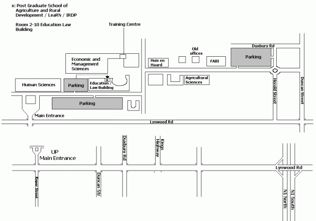

|
Next Training Courses at the University of Pretoria
This is to announce a training session on multi-agent systems and modelling,
which
will take place at the University of Pretoria from October 13 to October
24 2003, on a
part-time basis (8:30 - 13:00).
It is organised by CIRAD and the University of Pretoria, with the financial
support of the
Embassy of France in South Africa.
All people contacted at this stage are kindly requested to distribute
this information to any
person potentially interested in attending. Enquiries and registration
applications must be sent to:
Dr. Sylvain Perret
Associate Professor, University of Pretoria
Department of Agricultural Economics,
Extension & Rural Development
Pretoria 0002, South Africa
tel. +27 12 420 5021
fax + 27 12 420 4958 / 5001
sperret@postino.up.ac.za
About MAS:
Multi-agent systems form powerful tools to investigate interactions
between societies and their economic and natural environment. They also
catter for scaling and spatial issues relating to these interactions.
The development of MAS approach is closely related to the problem of complexity
(multiple spatial and organizational levels, multiple social, economic
and natural agents, and multiple viewpoints). It also refers to the search
for simple representations of the real world through modeling.
Natural resource management is one specific possible application of MAS,
which help identifying the conditions for co-viability of resources and
of socio-economic dynamics. That is why the training session will emphasize
those interactions, although not
exclusively.
For more information on multi agent systems and modelling, just click
on the following link
http://cormas.cirad.fr/pdf/plaquette_en.pdf
Who should attend ?
Post graduate students, research and development staff, in the fields
of natural resource use and management, with either economic, social,
agricultural or environmental emphasis. Beyond an advanced computer literacy
(as a minimum requirement), some modelling habilities may help. Above
all, a real interest in the research field is required.
Scheduling and contents
|
October
13 24, 2003
|
Monday
13
|
Tuesday
14
|
Wednesday
15
|
Thursday
16
|
Friday
17
|
|
08:30
am
10:30
am
|
Welcome
FishBanks
Roles Game
|
Introduction to object concepts and to UML
|
Introduction to MAS
|
More about MAS
|
UML (2)
Dynamics aspects
|
|
11:00
pm
13:00
pm
|
FishBanks (continuing)
|
UML (1)
Static aspects
|
Introduction to the Object-Oriented
Programming Language SmallTalk
|
Practice on Cormas (1)
Cellular automata : Forest fire
|
Practice on Cormas (2)
Agents perception : Individualistic
Firemen
|
|
|
Monday
20
|
Tuesday
21
|
Wednesday
22
|
Thursday
23
|
Friday
24
|
|
08:30
am
10:30
am
|
Practice on Cormas (3)
Agents communication: Coordinated Firemen
|
MAS and Integrated Natural Resources
management:
Applications
|
The interplay between MAS and Roles-Playing
Games
|
Personal projects
|
Report back session on personal projects
|
|
11:00
pm
13:00
pm
|
Personal projects
|
Personal projects
|
Personal projects
|
Personal projects
|
Evaluation
|
As shown in the schedule, emphasis will be put first on the understanding
of complexity in the interactions between human societies and their environment,
with social and economic aspects, such complexity being seen as a topic
for investigation, and second, on the learning then application of a specific
modeling and simulation methodology (the Cormas platform).
Participants are expected to deliver a simple yet coherent personal project
(model) at the end of the session. Numerous case studies will be presented
and discussed during the course.
Organisational aspects
Three trainers from France (Dr. Christophe Le Page & Pierre Bommel,
CIRAD) and from South Africa (Louise Erasmus, University of Stellenbosch)
will manage the course and practicals.
Dr. Sylvain Perret from CIRAD and the University of Pretoria is organising
the session, and should be contacted on all practical / organisational
aspects. We expect to accommodate 15 to 20 participants.
The session benefits from a sponsorship by the Embassy of France in
South Africa (Cooperation and Cultural Service).
It is aimed at training and building capacity among academics and students
in South Africa, especially from historically disadvantaged communities,
yet with no exclusiveness. The programme intend to fully sponsor the participation
of some participants with such background (local travel costs, accommodation,
meals).
Other participants will only enjoy a free training session. All other
costs, including travel, accommodation, and living costs, will remain
theirs.
Please contact Sylvain Perret
for further enquiries on that matter.
We have already recorded a number of local and international applications.
So this is going to be a fairly global session, with lots of discussions
and potential partnerships to be set up ! This also means that any interested
person should apply shortly, since places are limited !
Where ?
This introductory session will be held within the Leadership Center.
On the map bellow, it is called "training center", within the
"economic and management sciences" building. Some other sessions
will be held within the old agricultural library. It's the "u"
shaped building just besides the "Agricultural sciences" building.

|